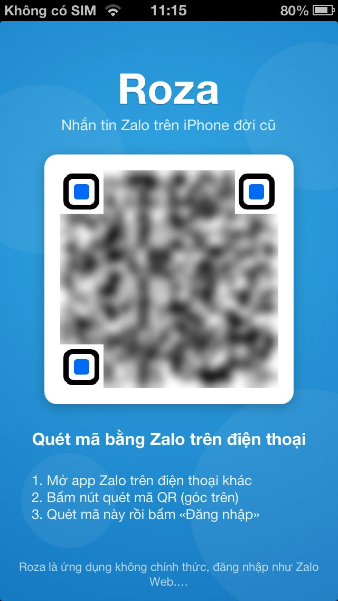
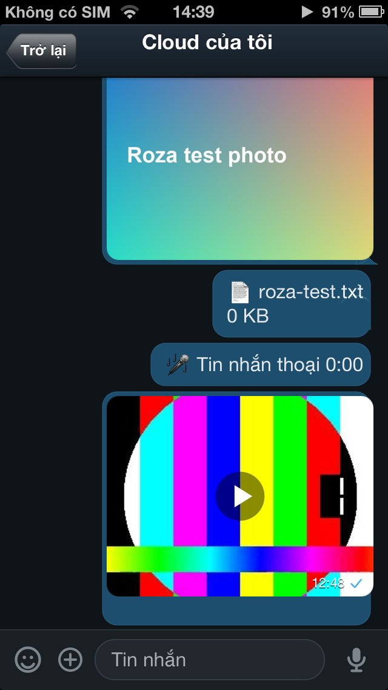

Roza 1.4.0
Zalo cho iOS 5 / iOS 6 đã jailbreak



Mới trong bản 1.4.0
Giao diện kính mới: tiêu đề lớn, nút kính tròn, chip lọc chat; thanh menu nổi tự thu gọn khi cuộn xuống
Menu nhấn giữ tin mới có hàng thả cảm xúc
Nhiều tài khoản trên một máy (Thêm → Thêm tài khoản), chạm để chuyển
Khoá Roza bằng mật mã 4 số; cuộc gọi đến vẫn nghe được
Emoji mới (🫶 🥹, cờ…) không còn hiện ô trống — vẽ bằng ảnh Twemoji
Tiết kiệm pin: kính đặc, sticker đứng hình
Bản 1.3.1
Sửa lỗi Roza tự thoát sau khi rời một cuộc trò chuyện lúc ảnh còn đang tải, hoặc sau khi gửi ảnh / video
Chạy nền ổn định hơn: thức thêm một lúc mỗi lần có tin (iOS 6 tắt hẳn app bị đánh thức quá nhiều lần); kết nối bị đóng thì nối lại ngay
Nhóm nhắn dồn: tối đa 5 thông báo / 10 giây, phần còn lại gộp thành «N tin nhắn mới khác»
Bản 1.3.0
Gọi thoại: gọi đi từ nút ống nghe trong chat, nghe cuộc gọi Zalo đến; loa ngoài, tắt micro
Cuộc gọi đến như cuộc gọi SIM khi Roza chạy nền: màn Từ chối / Trả lời, màn khoá tự sáng với «trượt để trả lời», rung
Nhạc chuông theo iPhone (hoặc chọn chuông khác) — theo âm lượng chuông và công tắc im lặng
Ghi vào Điện thoại → Gần đây: cuộc gọi Zalo đi / đến / nhỡ hiện trong nhật ký cuộc gọi của iOS
Ghim / bỏ ghim chat (nhấn giữ), đồng bộ với điện thoại; tin cuộc gọi nhỡ trong chat, chạm để gọi lại
Roza tự mở lại ở nền khi bị tắt để vẫn nhận tin và cuộc gọi (tắt được trong Thêm → Thông báo)
Bản 1.2.1
Sửa lỗi máy iOS 6 vào safe mode khi nhận thông báo tin dài có emoji (xem trước bị cắt giữa emoji làm màn hình chính sập)
Bản 1.2.0
Nhắc hẹn trong chat (đồng bộ với Zalo, báo đúng giờ, lặp ngày / tuần / tháng)
Vị trí: gửi vị trí, xem trên bản đồ OpenStreetMap, địa chỉ tiếng Việt
Mã QR chuyển khoản (VietQR, có sẵn số tiền) và gửi / xem tài khoản ngân hàng
Tin nhắn nhanh (gõ «/»), danh thiếp, lưu vào Telegram, tên gợi nhớ
Sửa: chat với người chưa kết bạn chỉ hiện «Người dùng Zalo»; Roza tự mở lại ở nền bị treo khi đang kết nối (mất thông báo)
Bản 1.1.0
Giao diện iPad: màn chia đôi — danh sách chat bên trái, cuộc trò chuyện bên phải, cả chiều dọc và ngang
Mở chat từ danh bạ, nhóm, soạn tin mới hay thông báo đều hiện ở bên phải; tô hàng chat đang mở
Xoay máy: khung chat, bong bóng tin và bảng sticker tự xếp lại; màn đăng nhập đặt giữa, mã QR to hơn
Bản 1.0.0
Bản đầu tiên: đăng nhập bằng mã QR (như Zalo Web), giao diện iOS 6, chế độ sáng / tối
Chat riêng / nhóm: trả lời, thu hồi, thả cảm xúc, «Đã xem»; sticker cả sticker động
Gửi ảnh, video, tệp, tin nhắn thoại; lưu ảnh / video / tệp về máy
Thông báo tin mới khi app ở nền; đồng bộ với Zalo trên điện thoại / PC
Sao lưu lên Telegram (bot riêng của bạn, kèm cả ảnh / video / tệp) và khôi phục trên máy mới
Trò chuyện ẩn bằng mã PIN, dùng chung với Zalo trên điện thoại
Lưu ý
Cài xong bấm Restart SpringBoard — tweak RZNotify cho Roza có mục «Thông báo» của iOS.
Đăng nhập cần một điện thoại khác có app Zalo để quét mã QR. Zalo chỉ cho một Zalo Web cùng lúc: mở chat.zalo.me ở nơi khác thì Roza báo, chạm «Dùng ở đây» để lấy lại.
Máy: iOS 5.0 – 6.1.x (iPhone 4 / 4S / 5, iPad 1 – 4, iPad mini 1, iPod touch 4 / 5).
Ứng dụng
không chính thức, không phải sản phẩm của Zalo / VNG. Mã nguồn mở GPL-3.0:
github.com/itovn/Roza